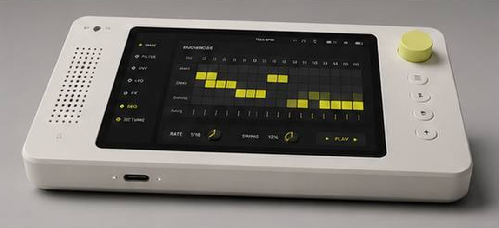
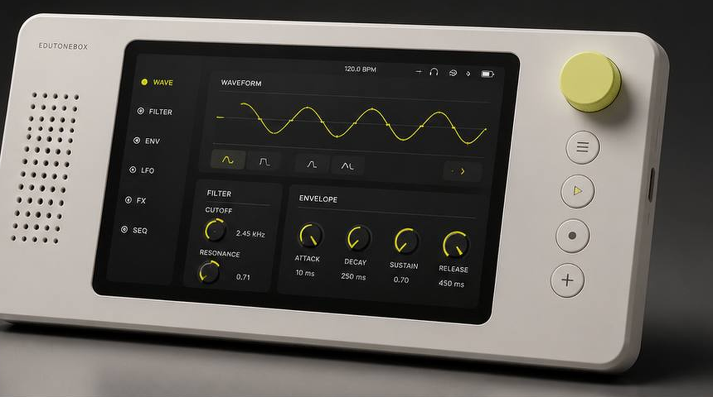

Technical Documentation
EduToneBox
Real-time sound exploration instrument — C++17 DSP, Qt6/QML, CoreAudio, and Raspberry Pi


Origin
I've been teaching synthesis for years. For most of that time, I've wanted a tool that lets students actually see what's happening — not just hear it, but watch a waveform change shape in real time, watch an envelope rise and fall, watch a filter sweep across a spectrum. I finally stopped waiting for someone to build it. EduToneBox is for my students, but honestly it's also for me. I'm obsessed with looking closely at things — getting microscopic, getting immersed. Synthesis is beautiful when you can see it. That's what this is trying to show. And while it starts in the classroom, I expect it'll travel — the kind of tool that finds its way into studios, onto workbenches, and into the hands of people who weren't looking for a synthesizer but can't put it down once they find one.
Overview
EduToneBox is a physical, real-time educational synthesizer prototype built around a C++17 DSP engine, a Qt6/QML control surface, and OSC-over-UDP communication, deployable on both macOS and Raspberry Pi. The goal is to make sound visible and playable without prescribing a curriculum. Its oscillator, 32-partial additive engine, and self-sampler are peer sources feeding the same envelope, multi-algorithm filter bank, effects, and calibrated post-output visualization path.
The project is structured as a portfolio-grade systems project rather than a single demo script. It includes platform-specific audio backends, reusable DSP modules, a desktop and Raspberry Pi UI, automated tests, and deployment scripts for both macOS and Raspberry Pi. A shared parameter registry, atomic preset snapshots, bounded callback-to-worker telemetry, and defensive recursive-DSP tests make the instrument a systems project rather than a single synthesis demo.
This project is actively in development. Current local verification: 85 of 85 CTest tests pass. The macOS packaging path produces a dependency-closed, ad-hoc-signed application bundle, and CI covers macOS plus a Pi-representative ARM64 Linux build. Native listening/calibration and physical Raspberry Pi audio/display acceptance remain outstanding and are not claimed here.
Architecture
The audio engine and UI are deliberately separate processes, connected by OSC over UDP on localhost. This keeps UI crashes and graphics performance isolated from audio generation, makes the DSP modules independently testable, and leaves the door open for future hardware control sources.
+---------------------------------------------+
| Qt6/QML UI Process |
| Controls, visualizations, theme, pages |
+----------------------+----------------------+
| OSC over UDP
| localhost:4559
+----------------------v----------------------+
| C++ Audio Engine Process |
| OSC server, DSP graph, audio callback |
+----------------------+----------------------+
|
+----------------------v----------------------+
| Platform Audio Backend |
| CoreAudio on macOS · ALSA on Linux/Pi |
+---------------------------------------------+
Signal flow
Oscillator | AdditiveEngine | Sampler → ADSR envelope → FilterBank (optional) → EffectsProcessor (optional) → output safety handling → CoreAudio or ALSA device
Control and visualization flow
QML control change → OSCClient → UDP OSC message → OSCServer handler → AudioEngine parameter update Post-output audio block → bounded SPSC telemetry queue → non-real-time visualization worker → atomic waveform, spectrum, and measurement frames → UI oscilloscope and spectrum analyzer
Audio Engine Capabilities
Real-time mono synthesis at 44.1 kHz with a default 512-sample buffer.
Oscillator
- Waveforms: Sine, Triangle, Saw, Square, Pulse, and custom wavetable buffer
- PolyBLEP band-limiting on Saw, Square, Pulse, and Triangle waveforms, reducing aliasing at discontinuities
Peer sound sources
- 32-partial additive engine with custom harmonic levels, all/odd/even sets, missing-fundamental control, roll-off, and canonical sine, saw, square, and triangle reconstruction
- Volatile self-sampler with preallocated recording storage, trim, loop/one-shot playback, root-frequency mapping, and ±24-semitone pitch control
- Click-reduced transitions between oscillator, additive, and sampler sources
Modulation
- ADSR envelope with linear and exponential curve support
- LFO with Sine, Triangle, Saw, and Square waveforms
- LFO routing targets: frequency, amplitude, and filter cutoff
Filter bank
- Topology-preserving state variable filter: low-pass, high-pass, band-pass, and notch
- Butterworth low-pass
- 2×-processed virtual analog low-pass
- Amplitude-normalized modal resonator
- Regression-tested decay and boundedness across public cutoff/Q extremes, including recursive feedback paths that can otherwise become limiter-masked runaway audio
Effects processor
- Reverb, Delay, Chorus, Flanger, Distortion, Bit crusher
- Unity-bounded flanger feedback interpolation and non-finite state containment
- Correct DC rejection after asymmetric tube-style saturation
Spectrum analysis
- FFT-based, using Accelerate/vDSP on macOS and FFTW3 on Linux/Raspberry Pi
- 4096-point Hann window with calibrated dBFS levels and interpolated peak-frequency measurement
- Peak frequency, peak dBFS, RMS dBFS, peak amplitude, sample rate, and visible measurement window
- Analysis represents the actual post-filter/post-effects output rather than an illustrative source shape
State and real-time architecture
- Shared registry for parameter identifiers, OSC addresses, ranges, defaults, and quantization
- Complete versioned preset snapshots with 16 crash-safe, atomically replaced slots
- Engine-to-UI startup synchronization and authoritative state publication after external changes
- No FFT, allocation, networking, or locking work in the real-time audio callback
Platform delivery
- CoreAudio and Accelerate/vDSP on macOS; ALSA and FFTW3 on Linux/Raspberry Pi
- Self-contained macOS bundle packaging with dependency closure, nested signing, bundled-engine lifecycle ownership, and Finder-launch diagnostics
- Raspberry Pi dependency, build, audio-test, and systemd tooling with separate audio-engine and kiosk UI services
- CI on macOS and a Pi-representative ARM64 Linux runner, including the offline DSP benchmark
User Interface
The Qt6/QML application presents a multi-page synthesizer interface intentionally designed as a fixed-aspect hardware-style instrument panel rather than a generic desktop form. Large controls, fixed 4:3 scaling, and pages organized by synthesis concept make it suitable for teaching rather than just operation.
- Pages for visualization, oscillator/filter, additive harmonics, sampler, modulation, and effects
- Live oscilloscope with rising-edge auto sync, free-run mode, 1-2-5 timebase control, and momentary frequency-based FIT
- One-tap FREEZE plus one captured “A” comparison trace, without nested measurement menus
- Calibrated live spectrum with atomic frames and signal measurements
- Touch-friendly knob controls with hardware-inspired visual styling
- Light and dark theme toggle
- Keyboard operation and accessibility names, roles, and state for primary controls
Tech Stack
| Language | C++17 |
| Build | CMake 3.20+ |
| UI | Qt6, QML, Qt Quick Controls |
| Tests | Catch2, CTest |
| macOS audio | CoreAudio, AudioToolbox, Accelerate/vDSP |
| Linux/Pi audio | ALSA |
| Linux/Pi FFT | FFTW3 |
| IPC | OSC-style UDP messages |
| DSP support | Local sndkit-derived modules for filters, effects, and helpers |
Repository Layout
AUDIO_BOX/
├── CMakeLists.txt
├── README.md
├── benchmarks/ Representative offline DSP throughput benchmark
├── commands/
│ ├── mac/ Clickable macOS command wrappers
│ └── pi/ Raspberry Pi desktop launchers
├── deploy/
│ ├── mac/ macOS build, run, sync, and app packaging
│ └── pi/ Pi build/run, audio test, and systemd kiosk services
├── docs/ Planning and deployment docs
├── src/
│ ├── audio_engine/
│ │ ├── AudioEngine.* Main synthesis engine and audio backend
│ │ ├── Oscillator.* Waveform generation and PolyBLEP
│ │ ├── AdditiveEngine.* 32-partial additive source
│ │ ├── Sampler.* Preallocated volatile self-sampler
│ │ ├── LFO.* Modulation source
│ │ ├── ADSR.* Envelope generator
│ │ ├── SVFilter.* Stable topology-preserving filter
│ │ ├── FilterBank.* Multiple algorithms behind one interface
│ │ ├── EffectsProcessor.* Reverb, delay, modulation, distortion
│ │ ├── AudioTelemetry.h Bounded callback-to-worker queue
│ │ ├── ScopeProcessor.* Triggered oscilloscope framing
│ │ ├── PresetStore.* Versioned crash-safe snapshots
│ │ ├── OSCServer.* UDP OSC control server
│ │ └── sndkit/ Embedded DSP helper modules
│ ├── common/
│ │ └── ParameterRegistry.h Shared engine/UI control contract
│ └── ui_app/
│ ├── OSCClient.* Qt UDP OSC client
│ ├── main.cpp
│ └── qml/ Instrument UI pages and controls
└── tests/
└── test_*.cpp DSP, OSC, presets, telemetry, scope, and FFT tests
OSC Control API
The OSC control API is fully documented. The audio engine listens on
localhost:4559
. All control messages follow the OSC address pattern below.
Oscillator
| Address | Value | Meaning |
|---|---|---|
| /osc/frequency | float | Frequency in Hz |
| /osc/amplitude | float | Output amplitude, 0.0 to 1.0 |
| /osc/waveform | int as float | 0 Sine · 1 Triangle · 2 Saw · 3 Square · 4 Pulse · 5 Custom |
| /osc/pulsewidth | float | Pulse duty cycle, clamped to 0.01–0.99 |
LFO
| Address | Value | Meaning |
|---|---|---|
| /osc/lfo/frequency | float | LFO rate |
| /osc/lfo/amplitude | float | LFO depth |
| /osc/lfo/waveform | int as float | 0 Sine · 1 Triangle · 2 Saw · 3 Square |
| /osc/lfo/range | int as float | 0 Bipolar · 1 Unipolar |
| /osc/lfo/target | int as float | 0 None · 1 Frequency · 2 Amplitude · 3 Filter |
ADSR
| Address | Value | Meaning |
|---|---|---|
| /osc/adsr/attack | float | Attack time in ms |
| /osc/adsr/decay | float | Decay time in ms |
| /osc/adsr/sustain | float | Sustain level, 0.0 to 1.0 |
| /osc/adsr/release | float | Release time in ms |
| /osc/adsr/curvetype | int as float | 0 Linear · 1 Exponential |
| /osc/adsr/noteon | — | Trigger envelope |
| /osc/adsr/noteoff | — | Release envelope |
Filter
| Address | Value | Meaning |
|---|---|---|
| /osc/filter/cutoff | float | Cutoff frequency in Hz |
| /osc/filter/resonance | float | Resonance/Q |
| /osc/filter/type | int as float | 0 LowPass · 1 HighPass · 2 BandPass · 3 Notch |
| /osc/filter/enabled | float | 0 off · 1 on |
| /osc/filter/algorithm | int as float | 0 StateVariable · 1 Butterworth · 2 VirtualAnalog · 3 ModalResonator |
Effects
| Address | Value | Meaning |
|---|---|---|
| /osc/effect/type | int as float | 0 None · 1 Reverb · 2 Delay · 3 Chorus · 4 Flanger · 5 Distortion · 6 BitCrusher |
| /osc/effect/mix | float | Dry/wet mix |
| /osc/effect/param1 | float | Effect-specific normalized parameter |
| /osc/effect/param2 | float | Effect-specific normalized parameter |
Visualization feedback
| Address | Values | Meaning |
|---|---|---|
| /visualization/scope/sync | 0 or 1 | Select free-run or rising-edge automatic synchronization |
| /visualization/scope/window | 1–100 ms | Set the oscilloscope time window |
| /waveform/frame | sample rate, samples, window, trigger state | Atomic post-output oscilloscope frame |
| /spectrum/frame | sample rate and calibrated band triples | Atomic logarithmic spectrum frame |
| /measurement/signal | peak Hz, peak/RMS dBFS, amplitude | Live post-output signal measurements |
Peer sources
| Address | Value | Meaning |
|---|---|---|
| /osc/source | 0–2 | Select oscillator, additive engine, or sampler |
| /osc/additive/reconstruction | 0–7 | Custom, all, odd, even, sine, saw, square, or triangle |
| /osc/additive/harmonic/01..32 | 0.0–1.0 | Individual harmonic levels |
| /sampler/record | 0 or 1 | Start or finish recording the final limited output |
| /sampler/clear · /sampler/restart | trigger | Clear the volatile take or restart playback |
State and presets
| Address | Value | Meaning |
|---|---|---|
| /state/request | trigger | Request publication of every registered parameter |
| /state/parameter | parameter index, value | Authoritative engine-to-client state |
| /preset/save · /preset/load | slot 1–16 | Atomically save or restore a complete versioned control snapshot |
Test Coverage
Unit tests are written in Catch2 and run via CTest. Current local status: 85 of 85 tests pass.
- Oscillator: initialization, parameter clamping, sample rates, waveform generation, custom buffers, amplitude scaling, and phase reset
- LFO: ranges, waveform generation, frequency accuracy, amplitude scaling, and reset behavior
- ADSR: state transitions, attack/decay/sustain/release phases, full-cycle behavior, and retriggering
- Filters and effects: algorithm selection, response, full public cutoff/Q extremes, decay tails, non-finite recovery, feedback boundedness, DC rejection, and reset behavior
- OSC: encoding, decoding, dispatch, integer/float handling, and malformed-packet rejection
- State: parameter registry completeness, normalization, preset migration, and crash-safe storage
- Real-time support: bounded telemetry ordering and pressure behavior without callback allocation
- Sources: additive reconstruction and harmonic sets plus sampler recording, trim, loop, and pitch mapping
- Visualization: triggered scope alignment and calibrated Accelerate/vDSP FFT amplitude
CI builds and tests on macOS and an ARM64 Linux runner, then runs a representative offline DSP benchmark. Automated pixel-level UI testing and physical audio-device acceptance are still separate tasks.
Roadmap
Near-term engineering
- Native macOS listening, level calibration, and source-transition acceptance with known tones
- Physical Raspberry Pi audio, display, latency, and thermal acceptance
- Automated visual regression coverage for the fixed-aspect QML interface
- Developer ID signing and notarization if the macOS bundle moves beyond local distribution
Product and hardware
- Map the shared software-control registry to physical encoders, buttons, switches, and enclosure
- Add an external audio-input and calibration abstraction, followed by optional WAV import
- Add optional MIDI mapping without making MIDI a requirement for the base instrument
Known Limitations
- The engine is monophonic. The sampler is a volatile self-recorder; recorded audio is not embedded in presets or persisted as an audio file.
- Native macOS listening and calibration acceptance remains outstanding even though the bundle builds, loads its embedded components, and passes automated verification.
- ARM64 CI is Pi-representative; physical Raspberry Pi audio/display and latency validation still requires the device.
- The current macOS bundle is ad-hoc signed for local verification, not Developer ID signed or notarized.
- UI startup is smoke-tested, but automated pixel-level and physical-control tests are not yet present.
Design Notes
The split-process architecture keeps UI crashes and graphics performance separate from audio generation. OSC is simple enough to inspect manually, portable across languages, and a natural fit for future hardware control sources.
DSP modules are kept as plain C++ classes with explicit state and parameter setters — straightforward to unit test, reuse, and eventually move into a plugin or embedded target. Recursive filters and effects are tested for bounded output and actual decay rather than only for finite numbers, because a final limiter can hide a dangerous internal limit cycle.
The UI is intentionally instrument-like: large controls, fixed 4:3 scaling, shallow interactions, and visual feedback designed for close listening rather than decoration. EduToneBox supplies raw capabilities; it does not embed lessons or dictate curriculum, and optional MIDI or external input should not become requirements for using the instrument.
The interesting aspect of this project is not only that it produces sound — it is that the codebase is organized to grow from a desktop prototype into a physical educational instrument.